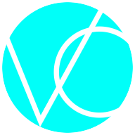

Abre com um toque, direto da tela inicial, como qualquer app.
Digite a senha que você recebeu do Studio Vitor Campos.
Protótipo com dados de exemplo. Na versão real, os números vêm direto do Instagram e do Facebook.